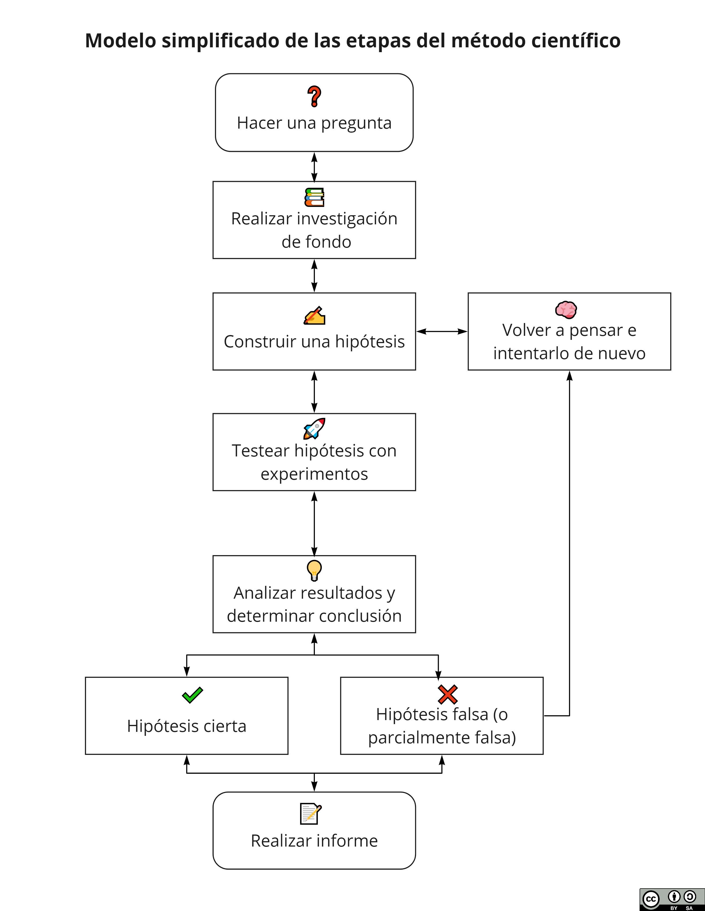

16. gaia · Jakintza zientifikoa
Egia ez dugu arrazoimenaz bakarrik ezagutzen, bihotzaz ere bai; azken modu horretan ezagutzen ditugu lehen printzipioak, eta alferrik saiatzen da haien aurka egiten arrazoibidea, horretan parterik ez duena.
—Blaise Pascal, Pensées, 282 · Clauderen itzulpena, frantsesetik
Giza espirituak, nozio absolutuak lortzeko ezintasuna aitorturik, uko egiten dio unibertsoaren jatorria eta patua bilatzeari eta fenomenoen barne-kausak ezagutzeari, honi bakarrik lotzeko: arrazoibidea eta behaketa ondo konbinatuz, haien lege efektiboak aurkitzeari.
—Auguste Comte, Cours de philosophie positive (Filosofia positiboaren ikastaroa), lehen ikasgaia · Clauderen itzulpena, frantsesetik
«Zientifikoki frogatuta dago». Horixe da, ziurrenik, euskaraz eztabaida gehien ixten dituen esaldia. Zuk esaten duzu, kremaren iragarkiak esaten du, zure osabak esaten du igandeko bazkarian, eta funtzionatu egiten du: entzuten duena isildu egiten da, edo gaiz aldatzen du. Konturatu ia inoiz ez zaiola fakturarik eskatzen.
Eskatu behin. Arratsalde bakarrean irakur dezakezu gutxi lo egiteak azkenean faktura pasatzen dizula osasunean, urak beregan disolbatu zenaren memoria gordetzen duela eta zure izaera jaio zinen eguneko astroen posizioaren araberakoa dela. Hiru baieztapenak jantzi berarekin datoz: zifrekin, hitz teknikoekin eta aztertu duela ziurtatzen duen norbaitekin atzean. Bat zientzia da, eta beste biak ez. Nola bereizten dituzu zuk, ez baitzara fisikaria, ez medikua, ez estatistikaria, eta ez baituzu esperimentu horietako bat bera ere errepikatuko zure etxeko sukaldean?
«Zientzialariez fio naiz» erantzuteak ez dizu balio, hori baita, hain zuzen, homeopatarengan fio denak ere egiten duena: autoritate bat beste batekin ordezkatzea ez da irizpide bat, bando bat aukeratzea baizik. Beste zerbait behar duzu: jakitea baieztapen batek zer bete behar duen sinesteak merezi izan dezan. Eta hemen dator alde deserosoa, hau filosofia bihurtzen duena, eta ez zientzia-eskola bat: filosofoek mende bat daramate eztabaidatzen irizpide hori zein den, eta ez dira ados jarri, nahiz eta kasu konkretuak epaitzeko orduan ia beti bat etorri1.
Bada bigarren galdera bat, eta ez da makala. Demagun asmatzen duzula zientzia, zientzia-itxura hutsa duenetik bereizten: geratu al zara jada jakitea merezi zuen guztiarekin? Ala badira gauza batzuk benetan dakizkizunak —zeuri buruz, maite duzunari buruz, min egiten dizunari buruz—, inolako esperimentuk inoiz baieztatuko ez dizkizunak?
§61 · Zientziaren prestigioa eta beste jakintza-modu batzuk
Jakintza zientifikoa bere baliozkotasunagatik eta seriotasunagatik nabarmentzen da eskura ditugun ezagutza-forma guztien artean, eta horrek prestigio-estatusa ematen dio gure gizartean.
Zalantzarik gabe, giza esperientziaren zenbait dimentsiotara irits gaitezke artearen, filosofiaren eta esperientzia espiritualen bidez, baita kontzientzia-egoera aldatuen bidez ere. Poesiak, antzerkiak, eleberriak, musikak, saiakera filosofikoak, erritu erlijiosoetan parte hartzeak eta substantzia haluzinogenoak kontrolpean hartzeak —baita ametseta-egoerek ere— geure buruaren zenbait zati ulertzera eraman gaitzakete, beste bideetatik —ezagutza zientifikoa oro har barne— iritsi ezin garenetara. Esperientzia horiek oso zailak dira besteei transmititzen eta azaltzen, behintzat era berean beren kabuz bizi izan ez dituztenei. Zientziak azalduko ditu behar bezala, edo ez, baina saiatzen denean, sentitzen dugu azalpen horri zerbait falta zaiola, ez duela esperientzia agortzen, hura deskribatzea lortzen badu ere, gutxienez, lerro nagusietan.
Zergatik funtzionatzen duen zientziak. Zergatik du, orduan, zientziak hainbesteko prestigioa? Funtzionatzen duelako. Nola funtzionatzen duela?
- Azaldu egiten du, modu askigarrian, natura, gizakia eta haren artefaktuak nola dabiltzan.
- Iragarri egiten ditu, asmatuz, aski ezagutzen dituen natura-fenomenoak.
- Teknologia sortzen du, eta hari esker garai aurrezientifiko guztietan baino luzeago, erosoago eta seguruago bizi gara.
- Aurkitu egiten ditu errealitatearen propietate berriak.
Begira zure inguruan: zure etxean, zure kalean, zure hirian. Seguru ez dagoela begiratzeko lekurik non ez duzun aurkituko teknologiaren eta zientziaren fruitu den giza produktu baten adibide garbiren bat. Elektrizitatea, autoak, antenak, hozkailua, iturriko ura. Eta mugikorra.
Begira orain zeure buruari. Ez arropari —hori ere ehungintza-ikerketaren emaitza da—, zeure gorputzari baizik. Betaurrekoak erabiltzen dituzu, edo begiak operatu dizkizute? Protesiren bat daukazu, edo pastillaren bat hartzen duzu bihotza, diabetesa edo osasun mentala erregulatzeko? Gorputza aldatzeko edo estetikako operazioren bat egin duzu? Oso litekeena da baietz. Galdera guztiei ezetz erantzun bazenie ere, jaten duzun hori —eta, beraz, zaren horren parte dena— natura ulertzeko eta manipulatzeko aurrerapen izugarrien emaitza da.
Erlijioak, arteak eta Filosofiak ez dute horrelako emaitzarik lortu existitzen daramatzaten milurtekoetan, ia gizakia gizaki denetik. Horrek ez du esan nahi ezer lortu ez dutenik, noski. Haien ekarpenak izugarri baliotsuak izan daitezke zenbait esparrutan, baina, zientziak egiten duen horretan —mundua nola dabilen azaldu, eta mundua eraldatu—, konparazioak broma bat dirudi, edo ia.
Hainbeste aipatzen dudan arrazoitzeko gaitasunak, gure espezieari datxekionak, gizateriaren hastapenetatik laguntzen digu, eta beti jardun du Homo sapiensengan. Baina saiakuntza-errorez funtzionatzen genuen. Bereziki dohain handiko pertsona batzuek aurrerapen handixeagoren batzuk egin zitzaketen, hala nola harrizko tresnak lantzea, sua sortzea edo gurpila. Egoera egokiak gertatu direnean, iraganeko zenbait gizartetan ezagutza protozientifikoak loratu izan dira, matematikaren eta astronomiaren inguruan, adibidez, edo abakoa edo idazkera asmatu izan dituzte.
Azken batean, gizarte orok behar izan du munduaren azalpen bat: nola lortu janaria, nola babestu arriskutik, nola antolatu sozialki, eta abar. Gainera, beti da abantailazkoa errealitatearen eredu bat izatea, errealitateari hobeto egokitzen zaiona. Baina ez dute guztiek arrakasta bera izan.
Ezagutza zientifikoaren aurrerapenaren ondorio guztiak ez dira positiboak. Zientzia eta teknologia giza tresnak dira giza eskuetan, eta, halakoak izanik, gainerako giza jardueren pasio eta motibazio berberen mende daude: zekenkeria, inbidia, berekoikeria, injustizia, botere-gosea eta besteak menderatzeko nahia. Baina zientziak eta teknologiak ondorio negatibo izugarriak izateagatik, ez dira baliogabe edo gezurrezko bihurtzen haien legeak eta artefaktuak. Epistemologiari dagokionez, kontua ez da balantza batean jartzea jarduera zientifikoaren ondorio onak eta txarrak, baizik eta haren eraginkortasuna, egiazko ezagutza sortzeko orduan. Besteaz etika arduratzen da. Biak dira garrantzitsuak, baina ez ditugu nahastu behar.
Arrazoi poetikoa. Hasieran esaten nizun horrek —badirela ulermen batzuk artearen, Filosofiaren edo esperientzia espiritualaren bidez bakarrik iristen zaizkigunak, eta, zientziak azaltzen dituenean, zerbait falta zaiola sentitzen dugula— badu izena, eta filosofo espainiar batek jarri zion. María Zambranok (1904-1991), Madrilen José Ortega y Gassetekin (1883-1955) prestatu eta berrogeita bost urte erbestean eman zituenak, arrazoi poetikoa deitu zion orain aztertuko dugun metodoan kabitzen ez den ezagutzeko modu horri.
Haren abiapuntua kexa bat da: Filosofia, Greziatik, poesia kanporatuz eraiki zen, eta, kanporatzean, esperientziaren erdirik gabe geratu zen —sentitzen duguna, pairatzen duguna, lurrundu gabe definitzen utzi ezin dena—. «Poesian zuzenean aurkitzen dugu gizaki konkretua, banakoa. Filosofian, gizakia bere historia unibertsalean», idatzi zuen2. Ez du proposatzen arrazoimena sentimenduarekin ordezkatzea, hori karikatura erraza bailitzateke: arrazoimen bat proposatzen du, ezagutu nahi duen horretatik defendatuko ez dena, eta bere objektura hurbilduko dena hura begiratu aurretik zatikatu gabe.
Eta kontura zaitez hau ez dela apaingarri literario bat, tesi epistemologiko bat baizik, eta erabat eztabaidagarria. Honako hau dio: badira egia batzuk demostrazioa ez den bide batetik bakarrik irits daitezkeenak —zure aita psikologia-eskuliburu batek baino hobeto azaltzen dizun eleberria, urteetan esaten jakin gabe zeneramana izendatzen duen poema—, eta horiek zientifikoak ez izateagatik baztertzea ez dela zorroztasuna, estukeria baizik. Tesia uka dezakezu; ezin duzuna da argudiorik gabe ukatu, orduan ez baitzara zientzia egiten ariko, zientifizismoa baizik.
§62 · Metodo zientifikoa
Zientziaren arrakastaren sekretu handia bere metodoan datza: metodo zientifikoan. Zentzu batean, esan dezakegu zientzia ez dela besterik metodo zientifikoa sistematikoki aplikatzea, haren bidez ebatz daitekeen inkognita orori.
Zientzia (latinezko scientia, ‘ezagutza’) ezagutza sistematiko egiaztagarrien multzo bat da, fenomeno sozialak, artifizialak eta naturalak aztertzen, azaltzen eta iragartzen dituena.
Metodo zientifikoa, berriz, arau-multzo bat besterik ez da: errealitatea nola behatu eta behaketa horretatik nola atera ondorio baliozkoak, egiaztagarriak eta unibertsalak. Ez besterik, baina ezta gutxiagorik ere.
Ikus ditzagun metodo zientifikoaren fase eta etapa nagusiak.

Ezjakintasuna. Dena ezjakintasunetik hasten da. Fenomeno bat aurkitzen dugu azaltzen ez dakiguna, edo helburu bat, nola lortu ez dakiguna. Hortik dator hura zertan datzan edo nola lortu jakiteko gure jakin-mina. Zergatik egiten du euria? Zergatik gaixotzen gara? Nola zeharka dezakegu ibai hori edo itsaso hori?
Behaketa. Lehen urratsa fenomeno ezezagun hori behatzea da. Behaketak metodikoa eta sistematikoa izan behar du. Kontua ez da, soilik, hodeiei, gaixoei edo uraren joanari begira esertzea, baizik eta fenomenoaren bertsio posible guztiak behatzea, gertatzen diren aldagaiak neurtzea, zehaztasunez deskribatzen saiatzea eta neurtzea.
Noiz egiten du euria, eta noiz ez? Zenbat euri egiten du, egiten duenean? Zer beste gauza gertatzen dira euria ari duenean? Eguneko zer une da, zer hilabete, zer tenperatura dago, zer hezetasun eta zer presio atmosferiko? Haizerik badabil?
Hipotesiak formulatzea. Fenomenoa sakon eta xehe aztertu dugunean, patroiak detektatzen joango gara, errepikatzen diren gertaerak.
Hara, badirudi udaberrian neguan baino euri gehiago egiten duela. Begira, eskualde tropikaletan basamortuan baino gehiago egiten du, eta kostaldeetan barnealdean baino gehiago. Hotz handia egiten badu, ez du euririk egiten: elurra egiten du.
Eta errepikatzen diren gertaera horiek azalpen-saioak eragingo dituzte gure buruan: eta halako edo holako gauza balitz gertatzen ari dena? Eta eguzkia, latitudea eta tenperatura euriarekin lotuta baleude? Bestalde, badirudi santua prozesioan atera ala ez atera, horrek ez diela eragiten euriari eta lehortearen amaierari.
Horrela, gertaera-kopuru izugarri bat behatu eta erregistratzen dugunean, puntu batera iritsiko gara non behaketak errepikatu egiten baitira eta jada ezer berririk ez dagoela ematen baitu. Orduan, hipotesi bat formulatuko dugu, hau da, ikertzen ari garen fenomenoaren azalpen posible bat: «euria egiten du x-gatik».
Ederki, beharbada badugu jada jatorrian ezagutzen ez genuen fenomenoaren azalpen kausal bat. Baina egon gaitezke seguru?
Esperimentazioa. Gure azalpena zuzena dela, baliozkoa dela ziurtatzeko, esperimentuak diseinatuko ditugu. Esperimentu bat egoera berezi bat besterik ez da, non fenomenoaren aldagai asko kontrolatzen baititugu. Laborategi batean tenperatura, presioa eta hezetasuna egiazta ditzakezu, eta, beraz, fenomeno bat iker dezakezu aldagai horiek aldakorrak izan eta hari eragin gabe. Ura berotu dezaket, adibidez, ikusteko noiz hasten den lurruntzen, zer abiaduratan egiten duen eta zenbat energia behar dudan ontzi osoa urez husteko. Nire esperimentuaren zirkunstantziak kontrola ditzakedanez, ura lurrunaraz dezaket berriro, baina oraingoan presio atmosferiko txikiagoarekin, mendi batera igoko banintz bezala. Errepikatzen dira behaketak? Tenperatura berean irakiten du urak itsas mailan eta 5000 m-ko garaieran, mendian? Aurreratzen dizut ezetz.
Horrela, aztertzen ari garen fenomenoari eragiten ez dioten aldagaiak baztertuz joango gara, eta eragiten diotenak aurkituko ditugu; eragiten dutenak isolatu ahal izango ditugu, eta neurtu zer neurritan eragiten duten eta nola elkarreragiten duten beren artean. Dena sistematikoki erregistratuz joango gara, eta kontrolatuz gure neurgailuek ondo funtzionatzen dutela eta neurtu beharrekoa eta behar bezala neurtzen dutela.
Emaitzen analisia. Gure hipotesiari buruz hainbeste esperimentu egin ditugunean non emaitzak errepikatzen baitzaizkigu eta asko antzekotzen baitira, behaketa eta esperimentu guztien multzoa aztertuko dugu, eta ondorioztatuko dugu gure hipotesia egiazkoa den ala ez.
Gure ondorioa positiboa bada, hipotesia egiaztatzen ariko gara. Dena dela, lana ez da hemen amaitzen. Errealitatea izugarri konplexua da, ia amaigabeko aldagai-kopuruarekin eta haien arteko elkarreraginekin. Baliteke bihar gure azalpenaren aurka doan gertaera bat gertatzea.
Ohikoena, hala ere, gure hipotesiak huts egitea da: azaldu ezin duen kasuren bat aurkitzea, aldagai-konbinazioren bat, gertaera bat zuzen ez iragartzea edo partzialki baino ez iragartzea. Orduan, hipotesia faltsutu egingo dugu.
Dena dela, puntu honetara iristen garenerako, normalean hipotesia ez da porrot hutsa izaten: partzialki egiten du huts. Oso desegokia izan balitz, askoz lehenago baztertuko genukeen, edo ez genukeen formulatu ere egingo. Orduan, kasu gehiago behatu beharko ditugu eta hipotesia berreraiki, hobetu, kasu zaharrak eta mota berrikoak har ditzan.
Hipotesi berriarekin esperimentazio-fasera eta emaitzen analisira itzuliko gara, eta hipotesia doituz eta behaketa errepikatuz joango gara, harik eta gure hipotesiaren azalpen- eta iragarpen-gaitasunarekin gustura geratu arte.
Lege naturalak. Behaketa- eta esperimentu-babes izugarria duten hipotesiek, errealitatea nola dabilen segurtasun handiz benetan azaltzen dutenek eta nola jokatuko duen iragartzeko aukera ematen digutenek, lege naturalen maila hartzen dute. Pentsa termodinamikaren printzipioetan edo grabitatearen legean.
Indukzioaren arazoa. Hemen komeni da gelditzea, igoera horretan tranpa bat baitago. «Begiratu dugun aldi guztietan horrela gertatu da» esatetik «beti eta leku guztietan horrela gertatzen da» esatera, bada urrats bat esperimentu batek ere ematen ez duena: kasuak pilatuta ere, kasuak dira oraindik, eta legeak guztiez hitz egiten du. Arrazoitzeko modu horri, behatutakotik arau orokorrera doanari, indukzioa deitzen diogu (§60), eta estuasunik handienetan jarri zuena David Hume (1711-1776) izan zen.
Humek bi mugimendutan egiten du. Lehenik, kausalitatea. Suak ura berotzen duela diozunean, zer ikusi duzu, zehazki? Sua ikusi duzu, gero ur beroa ikusi duzu, eta biak batera ikusi dituzu askotan. Inoiz ikusi ez duzuna bien arteko lotura da, ez baitago ezer ikusteko: beharrezkotasuna ez dago munduan, hura espero izateko zure ohituran baizik. Bigarrenik, indukzioa bera. Behatu duzunetik behatu ez duzunera pasatzeko, suposatu behar da natura uniformea dela, ikusi gabekoa ikusitakoaren antzekoa izango dela. Eta suposizio hori ezin da demostratu —bihar desberdin bat imajinatzeak ez baitakar inolako kontraesanik—, eta ezin da esperientziaz frogatu ere, esperientziaz frogatzea indukzio bat erabiltzea bailitzateke indukzioa justifikatzeko3.
Erreparatu zer egiten dion horrek irakurri berri duzunari. Lege naturalak ez dira demostratuta geratzen, haiek babesten dituzten esperimentuak asko izanda ere: ondo korroboratuta geratzen dira, eta ez da gauza bera. Aurkako kasu bakar bat aski da lege bat botatzeko; aldeko kasuen inolako kopuruk ez du balio hura frogatzeko. Horregatik, interesgarria ez da hipotesi bat egiaztatzea, hura faltsutzen saiatzea baizik, arestian ikusten genuen bezala; eta horregatik ere, behin-behinekotasuna zientzian arau bat da, eta ez istripu bat4.
Ikusten duzunez, metodo zientifikoak eskatzen ditu fenomenoen behaketa metodikoa, sakona eta neurtua; sormena, fenomeno horien kausen hipotesiak proposatzeko; irmotasuna, prozesu osoari ekiteko hura arautzen duten printzipioak saihestu gabe, eta iristeko ondorio baliozkoetara, unibertsaletara eta aski baliabide duen beste edozein zientzialarik errepikatzeko modukoetara.
Metodo zientifikoaren parte banaezina da —baina, batez ere, espiritu zientifikoarena— iritziz aldatzea azalpen hobeak daudenean, eta, ez daudenean, aktiboki sortzea.
§63 · Zientzia nork egin ahal izan duen
Kontuan izan azaldu berri duguna metodoaren bertsio sinplifikatu eta idealizatu bat dela, eskema bat.
Faktore pertsonalak eta sozialak. Zientzialariaren ikerketa-jarduera askoz ere konplexuagoa da, eta ez da hutsean gertatzen, ez mundutik eta gizartetik isolatuta, laborategi batek bunker itxura izan badezake ere. Era guztietako faktore pertsonalak eta sozialak daude, ikerketa zientifikoari eta metodoaren aplikazioari eragiten diotenak: zientzialariaren gaitasun kognitibotik eta zolitasunetik hasi eta haren lankideetaraino, finantzaketa eskuratzeko aukeraraino, eskura duen esperimentazio-ekipoaren kalitateraino edo ikerketa-organoek fenomeno horien gaineko esperimentuak onartzeko duten interesaraino. Aurreiritziez ez hitz egitearren, izan banakakoak, izan kolektiboak.
Bada faktore bat gehiago, zerrenda horretan ez dagoena eta aurrez aurre begiratzea komeni dena. Ia historia osoan, metodo zientifikoa gutxi batzuek bakarrik aplikatu ahal izan dute: zientzia egiteak beti eskatu izan ditu denbora librea, hezibidea, tresnak eta hori ordainduko zuen norbait, eta horrek kanpoan utzi zituen gizaki gehien-gehienak, gizonezkoak barne. XVII. mendeko nekazari analfabetoa ez zegoen laborategi batetik bere emaztea baino hurbilago.
Baina izan zen hesi bat, besteak ez bezalakoa. Pobreziak eta hezibide faltak gabeziagatik baztertzen dute: baliabideak biltzen zituena, sartu egiten zen. Emakumeei, gainera, arauz itxi zitzaien atea, eta arau bat ez da irekitzen ez diruarekin, ez talentuarekin. Espainian, 1910eko martxoaren 8ko Errege Agindura arte, emakume batek ere ezin zuen unibertsitatean matrikulatu agintaritzaren banakako baimenik gabe5. Royal Societyk, 1660an sortuak, ez zituen bere lehen bi bazkide emakumeak aukeratu 1945era arte6. Erreparatu aldeari, hor baitago auzi guztia: biblioteka, maisua eta fortuna zituen emakume batek, hala ere, ezin zuen matrikulatu, ezta akademia batean sartu ere. Bi askatasunak aztertzen ditugunean (§126) izango duzu haiek bereizten dituenaren izen zehatza: ia mundu guztiari askatasun positiboa falta izan zitzaion —baliabideak—; haiei, gainera, negatiboa ukatu zitzaien, hau da, ez diezazutela debekatu.
Matilda efektua. Eta sartzen zenarentzat bigarren iragazki bat geratzen zen, hau jada zientziaren barruan: aitortza. Margaret Rossiter historialariak (1944-2025) Matilda efektua deitu zion, Mateo efektuaren kontrastez —«fruitua dakarrenari eman egingo zaio» (Mt 25,29, Elizen Arteko Biblia)—: ikerketa baten meritua mailarik handieneko lankidearengan pilatu ohi da, eta, sinatzen zuena emakume bat zenean, aitortzak beste norabait joateko joera izan zuen7. Ez da gaitzespen moral bat antzinako zientzialarientzat: kreditua nola banatzen den azaltzen duen datu bat da, eta gaur ere neurtzen jarraitzen da. Kasuz kasu, hori bai, komeni da lasai ibiltzea8.
Eta hau epistemologia da, ez asmo onen eranskin bat. Edonorentzat balio duela dioen metodo bat talde txiki eta oso elkarren antzeko batek aplikatu zuen mendeetan. Horrek ez du baliogabetzen aurkitu zutena —emaitzak egiaztatu egiten dira, eta horretan datza, hain zuzen, metodoaren grazia—, baina bai azaltzen du axola duen zerbait: biztanleriaren gehiengoa kanpoan uzten duzunean, buruak galtzen dituzu. Nekazariarenak eta emakume kultuarenak. Atea irekitzea ez da zientziak inori egiten dion kontzesio bat: galdera onak galtzeari uzteko duen modurik merkeena da.
Eta gaur? Hesi formal hori ez da existitzen jada gure artean. Espainiako lege batek ere ez dizu galarazten nahi duzun horretan matrikulatzea, eta emakumeak dira gaur gehiengoa unibertsitatean, nahiz eta karreraz karrerako banaketa oso desorekatua izan oraindik9. Baina ez nahastu «hemen» eta «leku guztietan»: Afganistanen, emakumeek debekatuta dute bigarren hezkuntzan eta unibertsitatean sartzea, eta, 2026ko abuztuan, UNESCOk zioen munduko herrialde bakarra dela neskatoen eta emakumeen hezkuntza lehen mailatik gora formalki debekatzen duena10. Berariazko debekua ez da historiak atzean utzitako zaharkeria bat: erabaki politiko bat da, eta hartu egiten da, edo ez.
Eta hemen uzten dizut galdera, zurea baita, eta ez nirea. Legezko hesia erori zen; harekin batera erori al zen gainerako guztia? Erantzun aurretik, itzuli oharreko ehunekoetara, eta kontura zaitez datu bat ez dela azalpen bat. Informatikako bost ikasletatik bat baino gutxiago emakumea izateak11 azalpen oso desberdinak onartzen ditu, eta horietako zenbaitek elkar baztertzen dute. Zein zutik geratzen den jakiteko, ikertu egin behar da, ez lehendik gustatzen zitzaiguna aukeratu. Hori zientziaren filosofia da, eta horixe bera da gai honetan egiten ari zarena.
§64 · Marko teorikoak eta mugaketaren arazoa
Marko teorikoak. Ikerketa ere ez da hutsune teoriko batean gertatzen. Fenomeno berriak, honezkero, ez dira eguneroko esperientziatik sortzen: aurretiazko hipotesien emaitza dira. Albert Einsteinek (1879-1955) Erlatibitate orokorraren teoria proposatu zuenean, garaiko fisikaren eta matematiken ezagutza guztian bermatuta egin zuen, nahiz eta haiek zabaldu behar izan zituen berak gertatu beharrekotzat aurreikusitako fenomeno berriak deskribatu ahal izateko. Gainerako fisikariak ez ziren gauza fenomeno horiek behatzeko ere; ez tontoak zirelako, ez baitziren, baizik eta artean ez zituztelako fenomeno horiek bistaratzea edo ikustea posible egiten zuten ideiak.
Horrela, indarrean dauden hipotesi, teoria12 edo lege zientifikoen multzoa da markoa, zientzialariek geroko ikerketetarako oinarri hartzen dutena, eta aldi berean balio duena fenomenoak ulertzeko eta azalpen berriak arakatzeko. Zientzialariek marko teorikoetan jarduten dute, eta haiek ere badituzte munduak nola funtzionatzen duen azaltzen duten eredu mentalak: ikertzeko aukera ematen dieten ereduak, baina, estuegiak badira, fenomeno berriak azaltzea eragotziko dietenak.
Mugaketaren arazoa. Metodo zientifikoari zientzia zientzia ez denetik bereizteko irizpide gisa ematen ari gatzaizkion garrantziarekin, erraza beharko luke bereizteak. Horri deitzen diogu mugaketaren arazoa.
Fenomeno bat ikertzeko metodo zientifikoa aplikatzen ari gara? Zientzia da. Ez gara erabiltzen ari? Ez da zientzia.
Baina kontua ez da hain gauza erraza eta sinplea. Berriro gogorarazten dizut errealitatea izugarri konplexua dela, eta metodoaren araberako edo ez araberako ikerketaren aukera dikotomiko hau sinpleegia dela hura guztia hartzeko. Zientzialari batek hain hipotesi edo teoria sofistikatua proposatzen badu, non ez baitago haren gaineko esperimenturik egiterik, zientzia da?
Erreparatu Einsteinen adibideari: bere hipotesiak proposatu zituenean, ez zegoen haiek egiaztatzeko teknologiarik. Itxaron behar izan zen zenbait kontzeptu eta neurgailu heldu arte —erloju atomikoa, denbora ultrazehaztasunez neurtzen duena; LIGOa, grabitazio-uhinak detektatzen dituena; partikula-azeleragailuak—. Aurrerapen horiek gertatu ez balira, ezin izango zitzaiekeen metodo zientifikoaren erdia ere aplikatu. Ikusten duzu arazoa? Inork ez du zalantzan jartzen Einstein historiako zientzialaririk handienetako bat izan zela, baina, haren teoriak kontrastatzen joango ez balira, ke-saltzaile baten baliozkotasun zientifiko bera izango luke.
Baina Einsteinen ikerketak zientifikoak zirela sinestea ez al zatekeen fede-egintza huts bat izango, gaurko behaketek babestuko ez balituzte? Ez, inola ere ez, Einstein ez baitzen proposatzen ari egiaztatu ezin ziren gauzak, oraindik egiaztatu ezin zirenak baizik. Baina hori ez al zaio aplikatzen egunen batean agian espirituak edo mamuak detektatu eta behatu ahal izango ditugula dioenari ere? Ez, kasu horietan ez bezala, Einsteinek oso argi azaldu baitzuen zer zen beharrezkoa bere teoriak esperimentalki balidatzeko. Asko sinplifikatuz, hau esan zuen: «kronografo edo teleskopio pixka bat ahaltsuago bat dugunean, iragartzen dudan fenomeno hau behatu ahal izango dugu».
Zientziak azal dezakeenaren mugak. Baina erlatibitateaz edo mekanika kuantikoaz eztabaidatzea gure irismenetik kanpo dago, baita sasizientzialari gehienenetik ere. Mugaketaren arazoa, gehienetan, zientziak azal dezakeenaren mugetan agertzen da, eta hori ez da dena. Metodo zientifikoak berak ezartzen ditu muga horiek: fenomenoak behatu, neurtu eta esperimentatu ahal izan behar ditugu. Beraz, edonork behatzeko modukoa ez den guztia, objektiboki eta modu kontsistentean neur ezin daitekeena edo modu erreproduzigarrian esperimenta ezin daitekeena zientziaren eremutik kanpo geratzen da. Eta hori giza bizitzaren esparru garrantzitsu askorekin gertatzen da: gure ametsak eta itxaropenak, gure esperientzia intimo eta pertsonalak, gure intuizioak eta uste sendoak ia beti ez dira ikertzeko modukoak metodo zientifikoarekin, eta horrek ez dio izpirik kentzen haien garrantziari, guretzat behintzat.
Beharbada, posible ere ez da, ezta desiragarria ere, zientziak dena azaltzea. Baina ez da beharrezkoa beti eta une oro azalpen bat ematea natura-legeen terminoetan. Maitasuna edo adiskidetasuna, koadro baten edo musika-pieza baten aurreko goratzea, amonak prestatutako plater on bat jatearen gozamena edo haurtzaro zoriontsura itzularazten zaituen joko bat partzialki azter litzake, beharbada, zientziak. Azken batean, baditugu gure portaeran eragin handia duten hormonak; badugu kolorearen, haren hautematearen eta guri nola eragiten digun azaltzen duen teoria oso bat; badakigu nola dabiltzan dastamena eta usaimena, maila molekularreraino. Baina hori ez da esperientzia horiek osatzen dituen guztia: bada zerbait gehiago, agian askoz gehiago. Baina hain da intimoa eta pertsonala, non zientziak —datu-kopuru izugarriak, errepikapena eta kontsistentzia behar baititu— ezin baitu aztertu. Eta agian ez da behar ere. Azalpen unibertsalak ematen dizkigun bitartean, esparru pribatu, intimo eta pertsonal bat existitzea giza esperientziaren parte da.
§65 · Sasizientzia
Esperientzia intimo eta pertsonalaren esparru baliotsu bat egoteak ez du esan nahi gertatzen zaidan, bururatzen zaidan edo existitzen dela uste dudan edozer benetan existitzen denik, edo irudikatzen dudan bezalakoa denik. Abangoardiako zientziaren mutur batzuek metodo zientifikoaren arauak saltatzen dituztela ematea oso bestelakoa da edozer justifikatzetik, ez dakigunez, posible dela edo, are okerrago, egia dela argudiatuta. Dena ezagutu ezin izateak, edo oraindik ez ezagutzeak, ez dakar faltsua dela frogatu ez den edozein baieztapen egiazkoa izatea.
Zerk egiten duen sasizientifiko baieztapen bat. Faktore horien guztien eta beste batzuen konbinazioek eragiten dute zientifiko-itxura duten baina zientifikoak ez diren baieztapenak ugaritzea. Energia, kuantika eta bibrazioa bezalako terminoak erabiltzen dituzte, baina ez dituzte termino horiek aski definitzen, eta ez dute haiek neurtzeko tresnarik ematen; beraz, ez dute esan nahi zientzia estandarrarentzat esan nahi dutena. Esperientzia pertsonalari heltzen diote, baina baldintza esperimentaletan edo laborategikoetan erreproduzitu ezin den esperientzia bati; horrela, subjektibotasuna objektibotasunaren gainetik jartzen dute, baita intersubjektibotasunaren gainetik ere.
Hain zuzen ere, diziplina, teoria edo azalpen zientifikoak ez direlako, baina berdin baliozkoak edo baliozkoagoak izan nahi dutelako, sasizientziatzat ditugu. Hau da, zientzia faltsua; edo, hobeto esanda, ez-zientzia. Zientziak oraindik azaldu ezin duenaz abusatzen dute, inolako oinarri enpirikorik gabeko fenomenoak asmatzeko. Eta, okerrago dena, sendatu nahi omen duen teknologia ere «sortzen» dute.
Iruzurgile batzuei ez zaie aski zientziaren zirrikituetan mugitzea, beren baieztapenen anbiguotasunean edo baieztapen horiek zientifikoki frogatu beharrik ezaren abantailan; zuzenean ausartzen dira ukatzera zientziak nabarmen ezarri eta egiaztatutako azalpenak.
Sasizientziaren adibideak. Hona hemen sasizientzien edo baieztapen sasizientifikoen zenbait adibide; horietako ez gutxi negozio milioidunak dira beren aldezleentzat:
- Terraplanismoa (Lurra laua delako teoria). Zientziak alde guztietatik frogatu du Lurraren esferikotasuna, eta desmuntatu ditu laua delako uste faltsuak. Ez dio, normalean, eragiten pertsonen eguneroko bizitzari, eta are gutxiago ideia horiek defendatzen ez ditugunoi.
- Txertoen aurkako mugimendua, batez ere txertoek autismoa bezalako gaixotasunak eragiten dituztelako ustean oinarritua. Ideia hori —zabal gezurtatua, eta zientziak akatsak argi eta garbi detektatu eta errefutatu dizkion artikulu batean oinarritua— bai, izugarri arriskutsua da, zeren, gurasoek seme-alabak txertatzen ez badituzte, haiek saihets daitezkeen patologiez gaixotu baitaitezke, besteak kutsatu eta baita gaixotasun horietarako talde-immunitatea suntsitu ere. Horrek ez du esan nahi txertoak guztientzat, une eta egoera orotan, erabat eraginkorrak direnik, edo albo-ondoriorik ez dutenik. Baina etengabe hobetzen dira.
- Kristaloterapia, edo kristalak manipulatuz gaixotasunak senda daitezkeelako —edo, besterik gabe, ongizatea hobetu daitekeelako— ideia, zientzia-babesik batere ez duena.
- Homeopatia. Sinesmen honetan datza: zenbait substantziak, gaixotasunaren afinak eta ustezko printzipio aktiboa ia desagertzeraino diluituak, sendatu egiten dutela. Ez dago horren ebidentziarik. Bitxiak dira suizidio homeopatikoen bidezko homeopatiaren errefutazioak.
- Astrologia. Beharbada sasizientzietan zaharrena; dioenez, jaiotze-uneko astroen posizio erlatiboek eragina dute pertsonen nortasunean eta haien bizitzako gertaeretan.
- Pentsamendu positiboa. Kontua ez da jarrera positibo batek gure ongizate psikologikoan eta gure aldartean eraginik ez duela, badu-eta; baizik eta uste izatea pentsamendu positiboak, bere kabuz, minbizia bezalako patologia larriak senda ditzakeela.
- Mistizismo kuantikoa. Fenomeno espiritualak azaldu nahi izatea fenomeno espiritual horiei buruz ezer esaten ez duten termino zientifikoen bidez.
Seguru beste adibide batzuk bururatzen zaizkizula.
Laburbilduz. Iker dezake zientziak zientifikoki heriotzaren ondorengo bizitza? Ez, ez baita behagarria, eta are gutxiago neurgarria. Horrek ez du esan nahi automatikoki arrazoia dutenik espiritistek, arimen transmigrazioan sinesten dutenek edo iraganeko bizitzak ezagutzen dituztela diotenek. Baina haien existentzia ere ez du ukatzen. Zientzia gelditu egiten da gehiago esan ezin duen tokian. Harago joatea, zenbait ideia ukatzeko izanda ere, antizientifikoa litzateke. Baina jarrera zientifikoak eskatzen digu zientifikoki azaldu gabeko ustezko errealitateen aurrean existituko ez balira bezala jokatzeko. Hau da, ez litzateke zentzuzkoa izango nire erabakiak oinarritzea nire birramona zenarekin ouijaren bidez izandako komunikazio espiritualetan, jakintsua izanda ere birramona. Eta hildakoekiko komunikazioa egiaztatzeko eta balidatzeko interes berezia badut, hori egiteko bideak asmatzen saia naiteke, metodo zientifikoaren irizpideei jarraituz. Ekarpen izugarria litzateke gizateriarentzat, gertatuko balitz. Eta ezin badut, ezin dut.
Zaila da onartzea errealitatearen zenbait esparru ezin ditugula kausalki —hau da, zientifikoki— ulertu. Gure gogamenak, gizatiarra baita, ezjakintasun-hutsuneak era guztietako asmakizunez betetzeko joera du, haiek ez sentitzeko. Baina ezjakintasuna onartzea eta ezezagunaren ziurgabetasunarekin bizitzen jakitea ere giza esperientziaren parteak dira. Eta parte garrantzitsua dira, ezjakintasun horren onarpena baita, hain zuzen, jakin-min zientifikoa sortzen duena… baita Filosofia bera ere!
Hansson, S. O. (2025). Science and Pseudo-Science. In E. N. Zalta eta U. Nodelman (arg.), The Stanford Encyclopedia of Philosophy (Fall 2025 arg.). https://plato.stanford.edu/archives/fall2025/entries/pseudo-science/ Sarrerak honela laburbiltzen du egoera: adostasun askoz handiagoa dago kasu partikularren gainean, irizpide orokorren gainean baino.↩︎
Zambrano, M. (1939). Filosofía y poesía. Universidad Michoacana. Erbesterako bidean Pirinioak zeharkatu zituen urtean idatzi zuen; arrazoi poetikoaren formulazio heldua Claros del bosque-n dago (1977). 1988an, Cervantes Saria jaso zuen lehen emakumea izan zen. Aipua: Clauderen itzulpena, gaztelaniatik.↩︎
Argudioa hemen dago: Hume, D. (1748). Investigación sobre el entendimiento humano, IV. eta VII. atalak, eta, lehenago, Tratado de la naturaleza humana (1739-1740), I, iii. Bi adarreko berreraiketa —ez demostratiboa, ez probablea— honena da: Henderson, L. (2024). The Problem of Induction. In E. N. Zalta eta U. Nodelman (arg.), The Stanford Encyclopedia of Philosophy (Winter 2024 arg.). https://plato.stanford.edu/archives/win2024/entries/induction-problem/↩︎
Irtenbide faltsazionista Karl Popperrena (1902-1994) da, La lógica de la investigación científica-n (1934): egiaztatzearen eta faltsutzearen arteko asimetriari esker, zientzia Humeren arazoarekin bizi daiteke, hura ebatzi gabe. Berehala berragertuko da, mugaketaren arazoan.↩︎
Espainian, 1910eko martxoaren 8ko Errege Aginduak baimendu zuen, azkenean, matrikula «irakaskuntza ofizialean nahiz ez-ofizialean», goragokoei kontsultatu gabe. Aurretik, emakume bakoitzak baimen konkretu bat behar zuen, eta aitzindariak irakaslearen ondoan eserita joaten ziren klasera, eta norbaitek lagunduta sartzen eta irteten ziren. SINC · Servicio de Información y Noticias Científicas (FECYT). 1910: las españolas por fin van a la universidad. https://www.agenciasinc.es/Visual/Ilustraciones/1910-Las-espanolas-por-fin-van-a-la-universidad↩︎
Kathleen Lonsdale kristalografoa (1903-1971) eta Marjory Stephenson biokimikaria (1885-1948) izan ziren. 1902an Hertha Ayrton fisikari eta ingeniaria (1854-1923) proposatu zenean, ezetz eman zitzaion, estatutuek emakume ezkondurik onartzen ez zutela argudiatuta. The Royal Society. Women in the Royal Society. Science in the Making. https://makingscience.royalsociety.org/in-focus/women-in-the-royal-society↩︎
Rossiter, M. W. (1993). The Matthew Matilda Effect in Science. Social Studies of Science, 23(2), 325-341. Izenak Robert K. Mertonen (1910-2003) «Mateo efektuarekin» jokatzen du. Ikuspegi orokorrerako: Crasnow, S. (2025). Feminist Perspectives on Science. In E. N. Zalta eta U. Nodelman (arg.), The Stanford Encyclopedia of Philosophy (Fall 2025 arg.). https://plato.stanford.edu/archives/fall2025/entries/feminist-science/↩︎
Metodo-ohar bat, eta bi norabideetan balio du. Oso errepikatuak diren historia batzuk historialariek eztabaidatzen dituzten bertsioetan dabiltza; horregatik doaz hemen gertakari dokumentatuak eta datadunak. Eta ekarpen bat egindakoagatik neurtzen da, ez nork sinatu zuenagatik: meritu txiki bat puztea Matilda efektuaren errore bera egitea da, zeinua aldatuta. Zientziaren filosofia feministak berak women worthies deitzen dio izenak erreskatatze hutsari, eta, Sandra Hardingek adierazten duenez, ez da aski.↩︎
2024-2025 ikasturtean, emakumeak Espainiako graduko ikasleen % 57,1 ziren, baina adarrez adarreko banaketa oso desorekatua da: % 72,8 Osasun Zientzietan, % 63,7 Arte eta Giza Zientzietan, % 61,5 Gizarte eta Zuzenbide Zientzietan eta % 51,3 Zientzietan; Ingeniaritzan eta Arkitekturan, berriz, % 28,8 dira. Azken datu hori iturriak alderantziz argitaratzen du, gizonen ehuneko gisa —% 71,2—, eta hemen haren osagarria ematen da, bost zifrek gauza bera neur dezaten eta konparatu ahal izan daitezen. Ministerio de Ciencia, Innovación y Universidades. 2025. Datos y cifras del Sistema Universitario Español. Curso 2025/26.↩︎
Bigarren hezkuntzaren itxiera 2022ko martxoan agindu zen, eta unibertsitatearena, urte bereko abenduan; biak indarrean zeuden 2026ko abuztuan, jarraian datorren iturriaren arabera. UNESCO. 2026ko abuztuaren 11. Five years on: UNESCO calls for the full restoration of the right to education for Afghan girls and women. https://www.unesco.org/en/articles/five-years-unesco-calls-full-restoration-right-education-afghan-girls-and-women↩︎
2024-2025 ikasturtean, % 17,7 dira; iturriak alderantziz idazten du, gizonak % 82,3 direla esanez. Ministerio de Ciencia, Innovación y Universidades. 2025. Estadística de Estudiantes Universitarios. Curso 2024-2025, avance. Iturri honek ikasketa-esparruka sailkatzen du, eta aurrekoak, ezagutza-adarka; beraz, ez batu bi zerrendak.↩︎
Gure ondorioetarako, teoria zientifiko bat hipotesi-multzo ordenatu eta elkarlotu bat besterik ez da, fenomeno bat baino gehiago azaltzen duena: errealitatearen esparru bat.↩︎